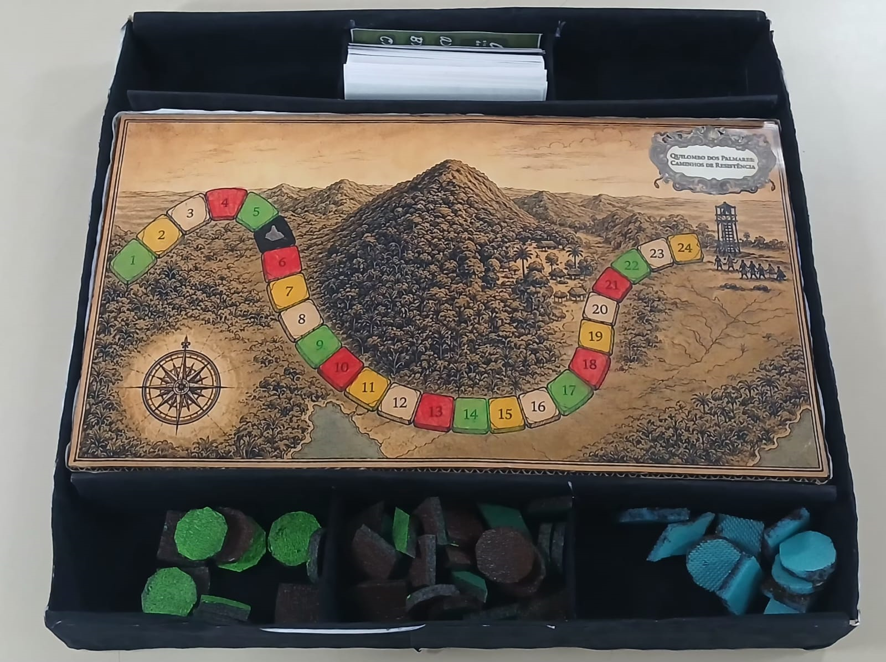

Quilombo dos Palmares: Caminhos de Resistência
Jogo de tabuleiro histórico em equipes
Duas equipes avançam pelo tabuleiro respondendo a perguntas sobre o Quilombo dos Palmares, conquistando peças de território e enfrentando cartas surpresa.

O desafio
O que observar neste jogo
Quilombo dos Palmares: Caminhos de Resistência é um jogo de tabuleiro criado por estudantes, com temática histórica. Os participantes assumem o papel de palmaristas durante a guerra de Palmares e precisam proteger seu território respondendo a perguntas e trabalhando em equipe.
A partida é disputada por duas equipes, acompanhadas por um mestre responsável pelo andamento do jogo, pelas cartas e pelas perguntas. O percurso combina casas de perguntas de diferentes dificuldades, casas surpresa e uma casa que representa uma área ocupada pelos invasores.
Autoria estudantil
Sobre a criação do jogo
Jogo de tabuleiro desenvolvido por estudantes como trabalho da disciplina de História.
- Autoria
- Isabela; Outras alunas — nomes a acrescentar
- Disciplina
- História
- Professora responsável
- Nome a acrescentar
Espaço reservado
Resumo das regras e outros detalhes
Duas equipes percorrem o tabuleiro respondendo a perguntas sobre o Quilombo dos Palmares. Respostas corretas rendem peças de território; casas especiais trazem dicas, infortúnios ou perda de território. A partida termina quando uma equipe alcança o final do percurso, vencendo quem tiver mais peças de território.
Este espaço será preenchido com as regras, a preparação da partida, os personagens, as ações possíveis, os objetivos e outros detalhes confirmados com as autoras.
Guia de ação
Como experimentar
- 1
Forme as equipes
Divida os participantes em duas equipes, cada uma com no mínimo duas e no máximo quatro pessoas. Uma pessoa atua como mestre, responsável pelas cartas, pelas perguntas e pelo andamento da partida.
- 2
Defina quem começa
As duas equipes começam no início do tabuleiro e lançam o dado. A equipe que tirar o maior número inicia o jogo.
- 3
Avance e responda
Na sua vez, lance o dado e avance o número de casas correspondente. As casas coloridas indicam perguntas: verde para fáceis, amarelo para médias e vermelho para difíceis. As respostas corretas rendem peças de território conforme a pontuação da carta.
- 4
Enfrente as casas especiais
Nas casas vazias, a equipe compra uma carta surpresa, que pode trazer uma dica ou um infortúnio. Na casa cinza/preta, que representa uma área ocupada pelos invasores, a equipe entrega uma peça de território ao mestre ou, se não tiver nenhuma, volta ao início.
- 5
Conclua a partida
O jogo termina quando uma das equipes chega ao final do percurso. Vence a equipe que tiver a maior quantidade de peças de território.
Possibilidades educativas
O que a atividade pode mobilizar
Conhecimento histórico
Mobilizar informações sobre a história do Quilombo dos Palmares por meio de perguntas de diferentes níveis.
Trabalho em equipe
Discutir as perguntas e construir respostas coletivamente.
Raciocínio e tomada de decisão
Lidar com perguntas, dicas, infortúnios e mudanças na quantidade de territórios conquistados.
“Pode mobilizar” não significa “desenvolve automaticamente”. A experiência depende da proposta, da repetição, do diálogo e das condições de participação.
Mediação
Perguntas que mantêm o problema aberto
- Que aspectos da história de Palmares aparecem nas perguntas do jogo?
- Como o trabalho em equipe ajuda a construir uma resposta?
- O que as cartas e as casas especiais representam na trajetória das equipes?
Participação e acessibilidade
Formas de adaptar sem retirar o desafio
- O mestre pode ler as perguntas em voz alta para a equipe.
- Permita que os integrantes discutam antes de apresentar uma resposta.
- Organize a leitura das cartas e a movimentação das peças de modo que todos possam participar.